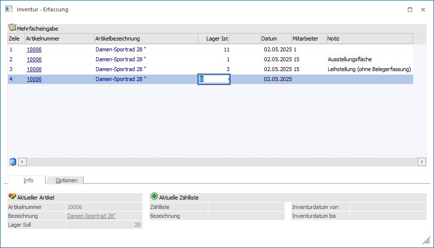

In die Mehrfacherfassung kann über die Spalte "Weitere Eingaben" der Einzelerfassung gewechselt werden. Hier können mehrere Erfassungszeilen zu einem Artikel hinterlegt werden, wobei folgende Punkte zu berücksichtigen sind:
ü Speicherung
Gibt es kein
Unterscheidungskriterium zwischen den einzelnen Erfassungszeilen, so findet bei
der endgültigen Speicherung eine automatische Kumulation der Zeilen statt.
Folgende Kriterien können unterschiedlich sein:
ü Lagerort
ü Mitarbeiter
ü Notiz
ü Inventurdatum
Das Inventurdatum
wurde aus der Einzelerfassung übernommen und ist nicht änderbar.
ü Artikel mit Lagerorten
Bei
Lagerortartikeln werden die einzelnen Lagerorterfassungen dargestellt und können
editiert werden. Eine Erfassung weitere Zeilen ist hingegen nicht möglich!

In der Tabelle werden standardmäßig die folgenden Spalten dargestellt und Funktionen angeboten:
Ø Zeile
Jede Erfassungszeile erhält automatisch eine Nummer zugeordnet und dient ausschließend der Orientierung.
Ø Artikelnummer
An dieser Stelle wird die Artikelnummer des Artikels dargestellt bzw. kann eingegeben werden.
Ø Artikelbezeichnung
In der Spalte "Artikelbezeichnung" wird die Bezeichnung des Artikels angezeigt.
Ø Lager Ist / Lager Ist 2
In diesen Spalten erfolgt die Eingabe der gezählten Inventurmenge.
Ø Datum
In der Spalte "Datum" wird das Inventurdatum aus der Einzelerfassung dargestellt.
Ø Mitarbeiter (optional)
Mit Hilfe der optional einblendbaren Spalte "Mitarbeiter" kann ein Mitarbeiter der Erfassung zugeordnet werden.
Ø Notiz (optional)
Über die Spalte "Notiz" kann zu der Erfassungszeile ein Text (bestehend aus maximal 255 Zeichen) hinterlegt werden.
Tabellenbuttons
Ø Zeile löschen
Durch Anwahl des Buttons "Zeile löschen" wird die markiere Inventurerfassung gelöscht.
Ø Ausgabe Excel
Durch Anwahl des Buttons "Ausgabe Excel" wird der Inhalt der Tabelle an Microsoft Excel übergeben.
Ø Tabelleneinstellungen speichern
Die Spalten einer Tabelle können grundsätzlich an beliebige Positionen verschoben, bzw. in der Breite entsprechend angepasst werden. Durch Anwahl des Buttons "Tabelleneinstellungen speichern" werden die Einstellungen benutzerspezifisch gespeichert und bei dem nächsten Aufruf des Programmpunktes wieder vorgeschlagen.
Ø Gesamteinstellungen speichern
Im Gegensatz zu "Tabelleneinstellungen speichern" können mit "Gesamteinstellungen speichern" mehrere Tabellenaufbauten gespeichert und nach Wunsch geladen werden. Zusätzlich werden Sonderfunktionen der Tabelle (z.B. "Spalte gruppieren") ebenfalls bei der Speicherung bedacht.
Buttons
Ø Speichern / Übernehmen
Bei Anwahl des Buttons "Speichern / Übernehmen" werden die getätigten Erfassungen gespeichert und zurück in die Einzelerfassung gewechselt.
Achtung
Die endgültige Speicherung finden immer über die Tabelle Erfassen statt und nicht in der Mehrfacherfassung.
Ø Ende
Durch Anwahl des Buttons "Ende" bzw. der Taste ESC wird die Mehrfacherfassung beendet und zurück in die Einzelerfassung gewechselt. Alle nicht gespeicherten Eingaben werden hierbei verworfen.
Ø Übernahme Soll => Ist
Die Übernahme der Sollbestände steht in der Mehrfacherfassung nicht zur Verfügung.
Ø Übernahme 0 => Ist
Die Übernahme der 0-Werte steht in der Mehrfacherfassung nicht zur Verfügung.